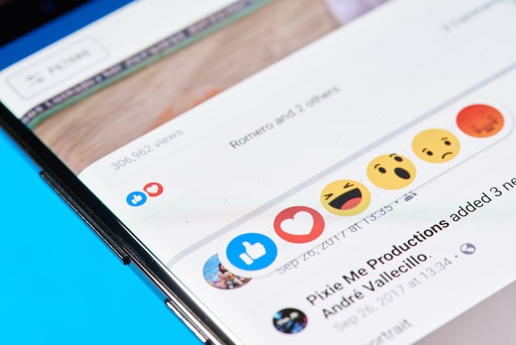
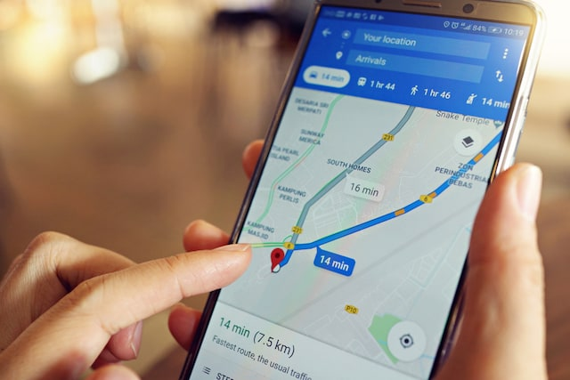

If you are reading this article, you most probably own a smartphone. Heck, if I have to make a guess, I would say that most of you guys are reading this article on a smartphone. Smartphones have become the most indispensable tech product that we own today and we use it almost all the time. Well, if you are using a smartphone, you are interacting with AI whether you know it or not. From the obvious AI features such as the built-in smart assistants to not so obvious ones such as the portrait mode in the camera, AI is impacting our lives every day.
If you are thinking that smart cars don?t personally effect you as they are still not in your country or city, well, how about something which you use on a daily basis. Even if you are living under a rock, there?s a high probability that you are tweeting from underneath it. If Twitter?s not your choice of poison, maybe it?s Facebook or Instagram, or Snapchat or any of the myriad of social media apps out there. Well, if you are using social media, most of your decisions are being impacted by artificial intelligence.
Another great example of how AI impacts our lives are the music and media streaming services that we are using on a daily basis. Whether you are using Spotify, Netflix, or YouTube, AI is making the decisions for you. You might feel that you are in total control but you are not. And as it is with everything, sometimes its good and sometimes it bad. For example, I love the Discover Weekly playlist on Spotify as it has introduced me to several new artists which I wouldn?t have been introduced to if not for the AI gods at Spotify.
By now you must be convinced of the fact that AI is impacting our lives on a daily basis. However, if there are still some skeptics out there let us take a few more example. How about the navigation and travel industry? I mean, most of us travel from time to time and use the navigation on almost a daily basis. Do you know that whether you are using Google or Apple Maps for navigating, or calling an Uber, or booking a flight ticket, you are using AI? Well, if you didn?t know that before, it?s time that you open your eyes. Both Google and Apple along with other navigation services use artificial intelligence to interpret hundreds of thousands of data point that they receive to give you real-time traffic data. When you are calling an Uber, both the pricing and the car that matches your ride request is decided by AI. As you can see, AI plays a significant role in how we reach from point A to point B.
We are even willingly letting artificial intelligence in our houses. Many of the smart home devices that we buy use artificial intelligence to learn our behavior so that they can adjust the settings themselves to make the experience as frictionless as possible for us. We have already talked about smart voice assistants which we use to control these smart home devices, and as we know, they are the prime example of AI impacting our lives.